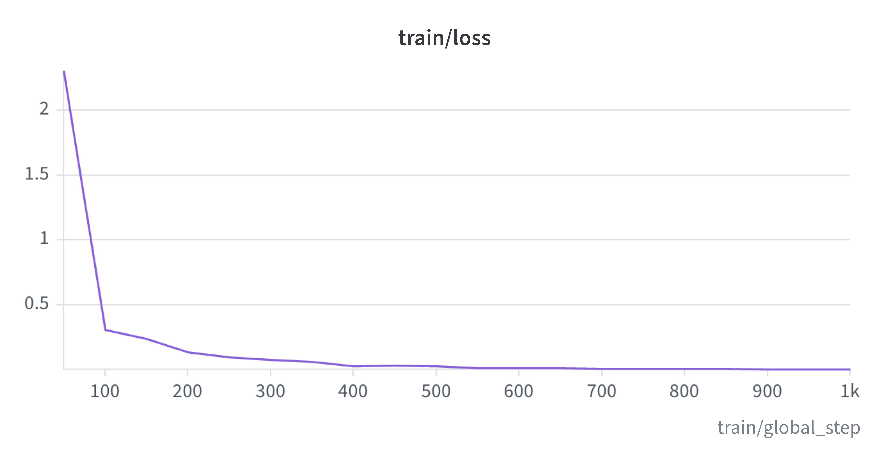
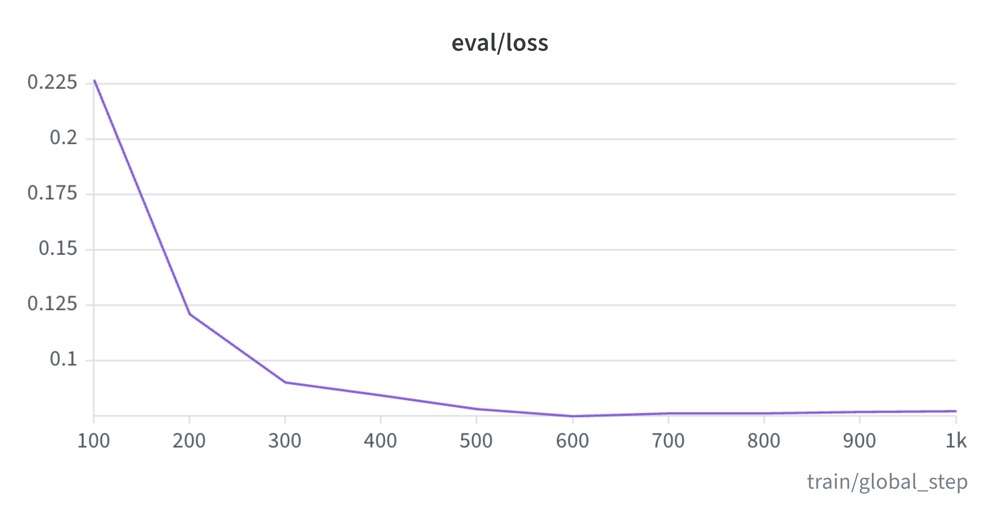
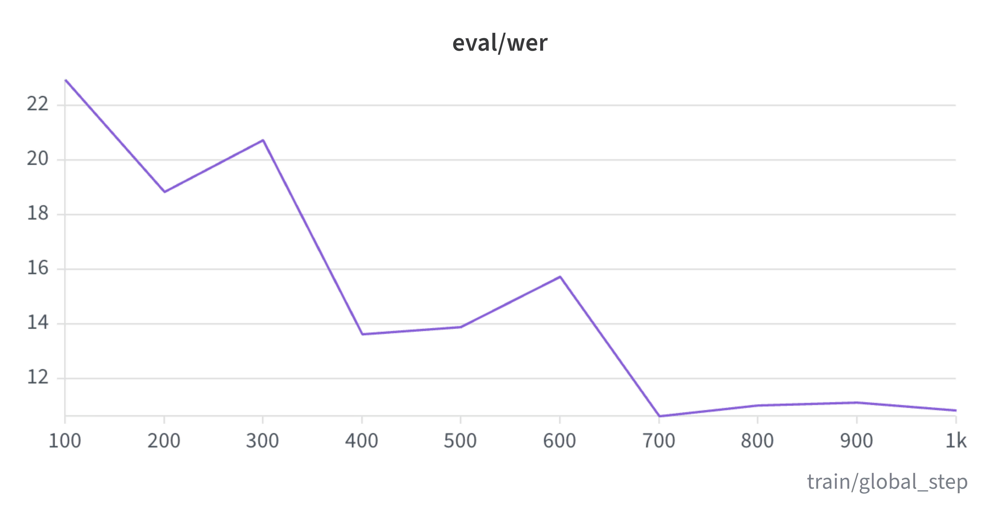

Medical Speech Recognition using Whisper
End-to-end fine-tuning of OpenAI Whisper-small for medical-domain speech recognition. General-purpose ASR models handle everyday English well but degrade on symptom descriptions and medical vocabulary, so this project builds the full path: dataset design, a leak-free train/validation/test split, W&B-tracked fine-tuning, checkpoint publication to the Hugging Face Hub — and, most importantly, a held-out evaluation harness that measures the result against the stock baseline under an identical decoding protocol.
Built on the public PaulMooney Medical ASR dataset on Hugging Face. The source partitions are misleadingly named — the bulk of the audio (5,895 clips) sits in the test split — so the data was restructured into a three-way split with clear semantics: 5,395 clips for training, 381 for validation (used only for checkpoint selection), and a 500-clip test set held untouched until final scoring (seed 42).
Source audio is 44.1 kHz stereo; everything is resampled to 16 kHz mono before it reaches the model — the Whisper input contract, enforced identically in training and evaluation.
Fine-tuned with the Hugging Face Seq2SeqTrainer: 1,000 steps (≈6 epochs), learning rate 1e-5 with linear warmup, batch size 32, fp16 mixed precision, and gradient checkpointing. Validation WER is computed every 100 steps and the best checkpoint is kept automatically.
The run is tracked in Weights & Biases, and the final checkpoint is published on the Hugging Face Hub as oegbo/whisper-small-medical-v2, fine-tuned from openai/whisper-small.

Training loss over 1,000 steps

Validation loss per evaluation step

Validation WER per evaluation step (drives best-checkpoint selection)
The held-out test set (all 500 clips, none used for training or model selection) is scored for both the stock baseline and the fine-tuned model under an identical, constrained decoding protocol: fixed English language, no-repeat n-gram, and repetition penalty applied to both models — no exclusions of any clip.
The harness caught two real problems during development, both fixed before the reported numbers: an input-pipeline bug, where native 44.1 kHz audio was initially fed to a 16 kHz-assuming pipeline and produced meaningless scores; and a repetition-loop hallucination from unconstrained decoding that dominated one model’s aggregate WER. Full diagnosis is in the notebook.
Normalized WER (lowercase, punctuation-stripped — standard ASR reporting practice), 500 held-out clips: stock baseline 11.0% → fine-tuned 5.4%, a 51% relative reduction. Raw WER: 20.6% → 12.7%.
| Model | Raw WER | Normalized WER |
|---|
| openai/whisper-small (stock) | 20.6% | 11.0% |
| Fine-tuned (v2) | 12.7% | 5.4% |
Per-clip analysis shows the fine-tuned model improving on most clips. A small number of test clips where both models produce similar text that differs from the reference suggest noise in the source dataset; these were retained in scoring for both models.
REF: I have a foot ache after running 500m with my running shoes.
BASE: I have a food tech after running 500 meter with my running shoes.
FT: I have a foot ache after running 500m with my running shoes.
REF: I have found some issues in my skin and tried to use cream but it doesn’t get better.
BASE: I have found some issues in my screen and tried to use screen but it doesn’t get better.
FT: I have found some issues in my skin and tried to use cream but it doesn’t get better.
REF: I got a divorce last year and I just can’t stop dwelling on how to get revenge on my ex husband.
BASE: I got a divorce last year and just can’t stop dwelling on how to get revenge my ex-husband.
FT: I got a divorce last year and i just can’t stop dwelling on how to get revenge on my ex husband.
REF: I can’t do anything I feel a weak in my body
BASE: Everything I felt in my blood.
FT: Everything I felt in my body
Neither model recovers this reference; clips like this are retained in the WER for both models — no exclusions.
Verbatim outputs from the 500-clip held-out evaluation (the notebook prints the first ten clips; four representative examples shown here).